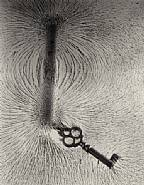

|
Instructor: Dr. Jason Pinkney |

|
Advice on homeworks
PhET Coulombs Law simulation
Week 1 PPT (pdf). (To be updated during week 1.)
Electrostatics demos involving the Wimshurst machine:
Wimhurst and Aluminum Bob. ...
Wimhurst and Electroscope. ...
Wimhurst and pinwheel.
(Not enough time to demonstrate these in class.)
Answers to "Questions" 1-14 from Ch. 21.
Homework1 (Chap. 21) key
Week 2 Chapter 21 PDF Updated 9/8/25
YouTube Video 1 on
graphical depiction of E-fields. Drawing E vectors on a matrix. (Method 1 starts at 6:17.) (Sorry the audio is weak.)
YouTube Video 2 on
graphical depiction of E-fields. Drawing field lines following 9 rules.
PhET Simulation of E-fields due to point charges.
E-fields T or F (Chap 21)
Answers to "Questions" 15-28 from Ch. 21
Week 3-4 Chapter 22 PDF (Gauss's Law.)
Week 4-5 Chapter 23 PDF (Potential)
Homework2 (Chap. 21b) key
Homework3 (Chap. 22) key
Review for Exam 1.
Homework4 (Chap. 23) key
Week 6 Chapter 24 (Capacitance) PDF)
YouTube (Kahn Academy) Video on capacitors and capacitance.
Week 6-7 Chapter 25 (Current and Resistance) PDF Some of this is presented in class, but not all.
Week 8 Chapter 26 (DC Circuits) PDF
Rely more on notes from the chalk board.
Homework5 (Chap. 24) key
Homework6 (Chap. 25) key
Homework7 (Chap. 26) key
Week 9 Chapter 27 (magnetic fields) PDF
Homework8 (Chap. 27) key
Week 10 Chapter 28 (Source of B-fields) PDF
Ampere's Law and Biot-Savart law.
Homework9 (Chap. 28) key
Week 11 Chapter 29 Faraday's Law (PDF) Ch. 29 outline
1 page equation list to be shown during Exam 2 and Final.
Review for Exam 2.
Homework10 (Chap. 29) key
Course Description:
This course is a calculus-based
introduction to E&M (electricity and magnetism), waves, and optics. Topics
include Coulomb's
law (static electric forces), electric and magnetic fields,
electric potentials and potential energy, Maxwell's
equations, waves, sound, light, image formation, and diffraction.
Some basic electrical circuits will be discussed,
but we mostly leave this to electrical engineering courses. Here
we want to emphasize the theory and concepts inherent in all electric and
magnetic phenomena. This is a challenging course in that you must
continue applying what you learned in
PHYS 2311 (Mechanics and Thermodynamics) and your calculus
courses.
A tentative calendar of topics is outlined below.
Course Objectives:
At the end of the course, students will be able to:
Prerequisites:
You should have passed PHYS 2311 with a minimum Grade of D. This means you
also have passed Calculus I.
Lab:
The lab for this class is Physics 2351. There is 1
section on Thursday at 8 am.
Labs will meet in Meyer 122. Your performance in the
lab has no direct effect on your grade in the lecture, however,
you will learn the PHYS 2321 material better if you work hard in the
lab (and vice versa).
You will have an
informational meeting with your instructor on the first week where you
will be assigned your first lab.
Grading:
| In-class |
Homework, attendance | 25% |
| Quizzes |
Quizzes (drop lowest score) | 25% |
| Exams | There will be two exams and a final. | 50% |
| Total |
100% |
Your final letter grade is calculated roughly as follows:
| <55 | 55-70 | 70-80 | 80-90 | 90-100 |
| F | D | C |
B |
A |
I will not grade any "harder" than the above. However, if the class mean drops below 75, I will grade more leniently.
| Week of | Topic | Chapter(s) | Tests |
| 8/25,27,29 | Syllabus. Electric Charge and Force | 21 | |
| 9/1 | LABOR DAY | ||
| 9/3,5 | Electric Fields,Gauss' Law | 21,22 | quiz1 |
| 9/8,10,12 | Gauss' Law, Electric Potential | 22,23 | quiz2 |
| 9/15,17,19 | Electric Potential | 23 | quiz3 |
| 9/22,24,26 | Capacitance | 24 | Exam I |
| 9/29,10/1,3 | Current & Resistance, DC Circuits | 25,26 | |
| 10/6,8,10 | Magnetic Fields | 27 | quiz4 |
| 10/13-14 | FALL BREAK | ||
| 10/15,17 | Ampere's Law | 28 | quiz5 |
| 10/20,22,24 | Faraday's Law | 29 | quiz6 |
| 10/27,29,31 | Inductance, Maxwell's Equations | 30,31 | Exam II |
| 11/3,5,7 | (Oscillations), Waves | (14),15 | |
| 11/10,12,14 | Sound | 16 | quiz7 |
| 11/17,19,21 | Optics: mirrors | 32 | quiz8 |
| 11/24,26,28 | THANKSGIVING BREAK | ||
| 12/1,3,5 | Optics: lenses | 33 | |
| 12/8,10,12 | Wave nature of light, Double slit | 34 | |
| 12/15 (Mon) | Comprehensive Final at 4:15-6:15, Room TBA | Final Exam |
Other Course Policies
Canvas will only be used sparingly for this class unless we have to go online. I will make files like homework keys, practice problems, and lecture notes available on this class web page instead of Canvas. I plan to import test scores into the Canvas gradebook once every 3 or 4 weeks. Disregard any letter grades generated by Canvas because they do not follow my grading curve. Let me know if you don't see your scores for some reason. Here is a link to Canvas.
Attendance will be checked on many days, particularly during the first few weeks. Attendance is crucial on test days or due dates. It is also important for participation in class activities and simply hearing lectures. Let me know in advance (e-mail is fine) if you think you will need to miss class on a test day. If you miss a quiz or exam because of an unforeseen emergency, let me know as soon as possible, and provide proof of the emergency. The name and phone number of a relevant authority figure (perhaps a parent) can be provided as proof.
Homework will consist of reading and working problems from the textbook or the instructor. Problem solving is a major part of physics and you need to practice. Homework turned in after the time it is due will still receive 50% credit. It will be scored on completeness and correctness, but not every problem will be checked. You can discuss homework with your classmates, but don't copy their work verbatim. Don't copy the solutions manual verbatim. Don't have AI solve your problems. Show your work, don't just write down the final answer. After a warning, you'll be docked points. Look for keys posted after the homework is due.
Turning in Homework You must turn in hardcopies of your homework. Please write neatly, circle or box final answers, don't put more than one answer on a given row, and put spaces between problems. Engineering paper works well. Don't use spiral notebooks unless you remove the frills from each page (I may deduct points for frills if my warnings are ignored).
Practice Quizzes / Self tests will be made available online for each chapter or week of material. (See "Self Tests" below.) These are multiple choice questions linked through the class web page (not Canvas). The answers can be seen by clicking "Grade". I do not see your answers and these do not count towards your grade.
Quizzes will usually be given every week or two. I hope to give most quizzes in-class (allowing about 15 minutes)), but some may be on-line (via Canvas) or take-home. If you miss a quiz you cannot make it up unless you had an excusable absence. Sleeping in is not excused. We will try to arrange an in-person make-up at my office (SA 111). If we cannot find a time before the graded quizzes are returned to the other students, then you may have to take a 0. (For this reason, I will drop your lowest quiz score.)
Exams will be given roughly every 5 weeks (so that there are 2 plus a final). These will weigh most heavily towards your class grade. The final exam will be comprehensive, but will emphasize the last 3-5 weeks of material. One or more of the exams might be given on Canvas (to save class time). The same make-up rules used for quizzes apply (see above), but the lowest exam score is not dropped.
Disruptions You can ask questions during class, but don't interfere with the learning of the students around you with irrelavent chatter. Also, don't operate cell phones or laptops without my permission during lectures. Try not to arrive late or get up and walk out early (unless you are told to for being disruptive).
Calculators I encourage you to use a calculator in this class. However, you may not use calculators to store information for tests and quizzes. (This includes writing equations on the lid.) Tests and quizzes don't usually require much arithmetic, so the calculator is mostly needed for homework.
Tutoring will be available from the Physics Program and possibly Engineering. Listen for announcements in class. (Physics tutoring is usually Thursdays 7-9 pm.) Of course, you are welcome to drop by during my office hours!
Cheating During quizzes and exams it is important that you do your own work without help from others in the class. Getting help from or providing help to others during tests is considered cheating. For homework, you can work together, but if it becomes obvious that you are copying verbatim from a manual or another person, you risk point deductions. I reserve the right to give a 0 score and report students for disciplinary action if I observe cheating. You will usually receive a warning before severe penalties. Other penalties include arbitrary point deductions and excluding the score from your average. During in-class tests, you may not obtain information from electronic devices. If online tests are given, you will be expected to work alone unless explicitly stated otherwise. You will sometimes be allowed to use notes or other aids but you are not to exchange any information with others, including someone not in your class.
Common syllabus information. Here is common course information which applies to all courses. This includes Academic Dishonesty, Accommodations, ONU Health and Safety Policy, Title IX, DEI, Grading Modes, Readmission, Repeat Policies, and more.SELF TESTS
Here are some "Test Bank Practice"
questions used for previous classes.
Chap. 21 - a few more Practice questions
Chap. 28 Test Bank Practice. Symbol typos may exist in # 1, 7, and 8
Chap. 15 (wave motion) Test Bank Practice. Typos:
Chap. 34. Test Bank Practice. (Just do double slit interference)
|
|
|
|